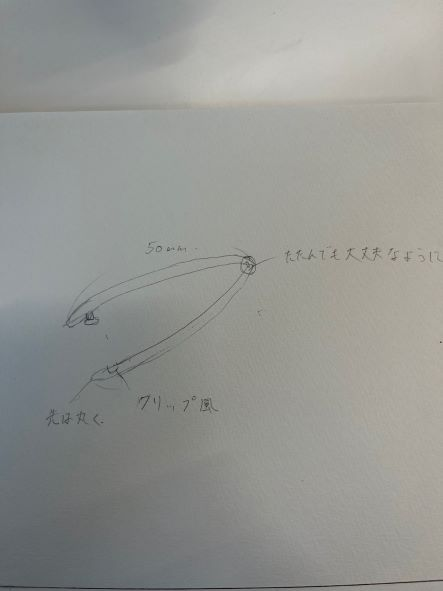
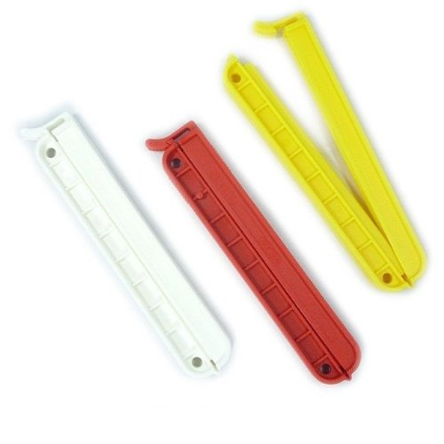
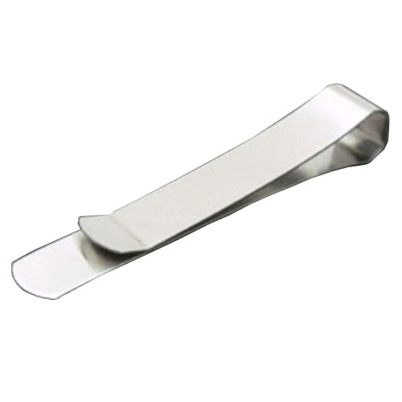
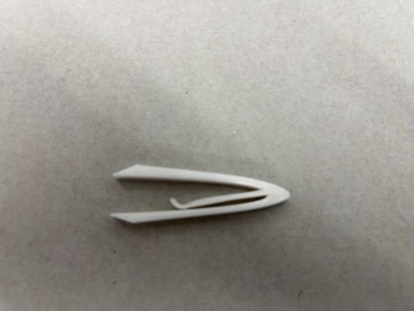

スケッチ

構想段階

破竹の勢い
最初の構想段階ではこのようにピンセットのままクリップのようにできるようにできたらいいと持っていました。
しかし、fusionの段階でこれではピンセットの機能を果たすことができないと思いました。
そのため、別の方法でクリップできる方法があるのではないかと考えました。

ステンレスクラスプ
なのでこのようにして挟める方式のクリップに変更することにしました。
作品

stlファイル
クリップ＋ピンセット
作成の理由
この作品を作ろうと思った理由は、ピンセットは日常的にはそんな使いません。
しかし、ピンセットがほしい時には持ってないことが多いです。
そこで学校に来ているときによく必要だなと感じるものとくっつけることができたらいいと思いました。
なのでプリントなどを挟めるクリップがあれば良いなと思いこのピンセットを作成することにしました。
作品の説明
このピンセットはピンセットの摘まめる能力にプラスしてプリントなど挟める能力も追加してみました。
製作段階で調べたこと
ピンセットの形がどんなものがあるのか調べた
使い方の動画
その他考えていたピンセットのスケッチ
.png) ␣
␣.png) ␣
␣.png)